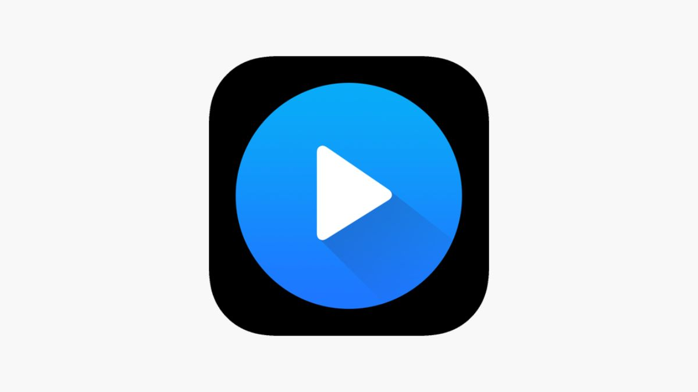

Điều khiển trình phát video bằng cử chỉ tay
Dự án ứng dụng AI và Computer Vision để nhận diện cử chỉ tay, cho phép người dùng điều khiển trình phát video (phát, dừng, tua, tăng giảm âm lượng, v.v.) một cách tự nhiên mà không cần chạm vào thiết bị.
Hệ thống sử dụng OpenCV và Mediapipe để phát hiện và phân tích cử chỉ, mang lại trải nghiệm tương tác hiện đại, phù hợp cho các ứng dụng giải trí, giáo dục hoặc trình chiếu không chạm.
Tình trạng: Đã hoàn thành 100% .
üîó GitHub: github.com/SophistMan12/video-gesture-control
Công nghệ sử dụng
- Ngôn ngữ: Python
- AI/Computer Vision: OpenCV, Mediapipe
- IDE: VS Code, Jupyter Notebook
- Kiến trúc: Modular, dễ mở rộng